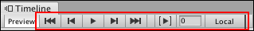
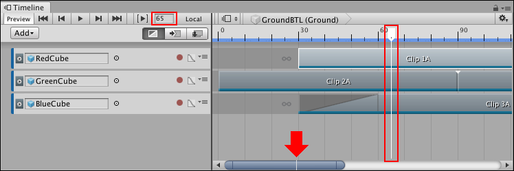
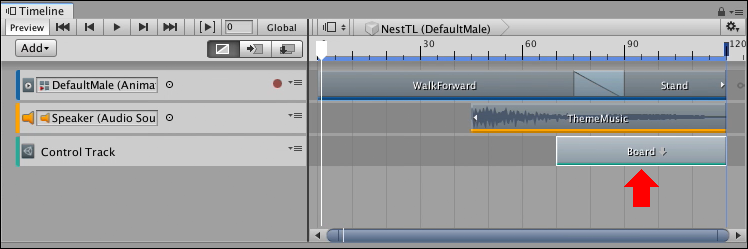
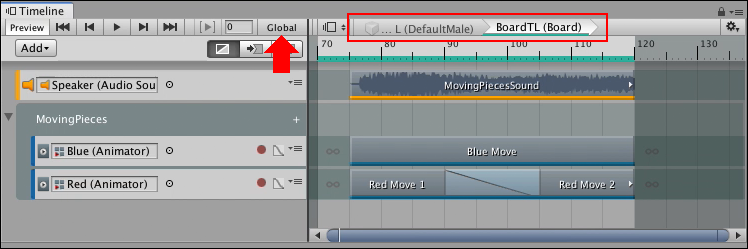
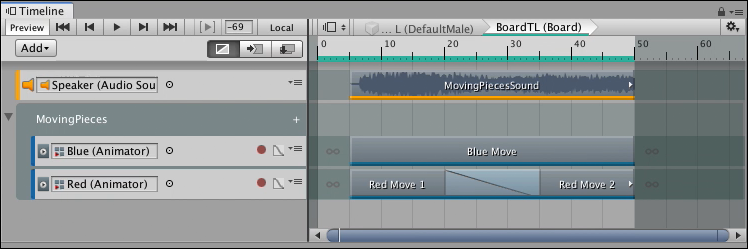
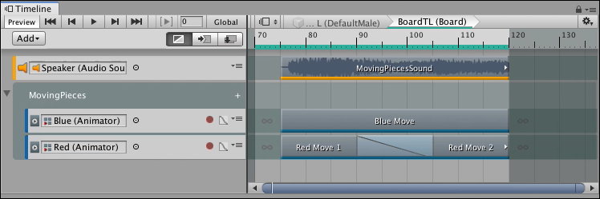

Timeline Playback Controls¶
To play the Timeline instance and to control the location of the Timeline Playhead, use the Timeline Playback Controls.

Timeline Playback Controls
Timeline Playhead and Playhead Location field¶
The Timeline Playhead indicates the exact point in time being previewed in the Timeline window. The Playhead Location field expresses the location of the Timeline Playhead in either frames or seconds.

Playhead Location field and Timeline Playhead (red). The Timeline Playhead also appears on the Zoombar (red arrow).
Use the Zoombar to navigate, scroll, and zoom the Clips view. A white line indicates the location of the Timeline Playhead in relation to the entire Timeline instance.
To jump the Timeline Playhead to a specific time, click the Timeline ruler. You can also enter the time value in the Playhead Location field and press Enter. When entering a value, frames are converted to seconds or seconds are converted to frames, based on the Timeline settings. For example, if the Timeline ruler is expressed as seconds with a frame rate of 30 frames per second, entering 180 in the Playhead Location field converts 180 frames to seconds and moves the Timeline Playhead to 6:00. To set the time format that the Timeline window uses, configure the Timeline Settings.
Switching between Local and Global¶
Use the Local or Global button to change the Timeline ruler from local time to global time. Local time and global time are only relevant when editing a nested Timeline instance.
To create a nested Timeline instance, drag a GameObject associated with a Timeline instance into another Timeline instance. The Timeline instance you are dragging into becomes the master Timeline instance. The Timeline instance associated with the GameObject becomes a nested Timeline instance.

A nested Timeline instance appears as a Control clip on a Control track (red arrow)
To edit a nested Timeline instance, double-click the Control clip that contains the nested Timeline instance. The Timeline window switches to the nested Timeline instance, indicated by the Timeline title which shows the name and GameObject of the master Timeline instance, followed by the name and GameObject of the nested Timeline instance.

The Timeline title indicates that you are editing a nested Timeline instance (red outline). The Global button (red arrow) indicates that the nested Timeline instance is shown using global time.
When editing a nested Timeline instance, click Global to switch the Timeline ruler to Local time. Local time is relative to the nested Timeline. This means that the Timeline ruler starts at zero.

A nested Timeline instance in Local time.
Click Local to view the Timeline ruler in relation to the placement of the nested Timeline in the master Timeline instance. This means that if, for example, if the Control clip is placed at frame 70 of the master Timeline then the Timeline ruler starts at 70 at the beginning of the nested Timeline instance.

A nested Timeline instance in Global time.